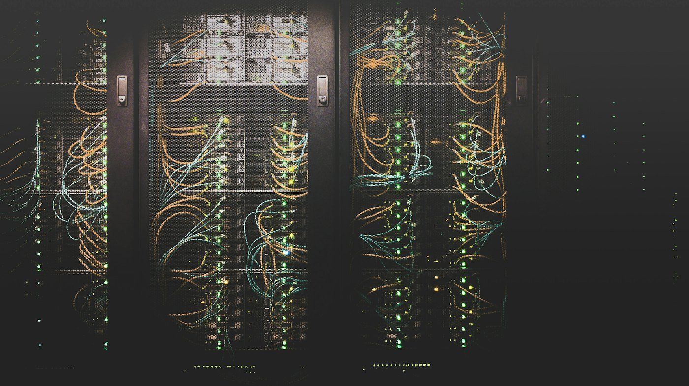
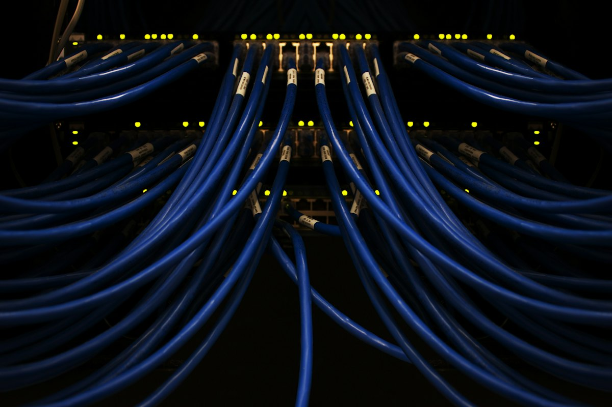

Six administrators, one perimeter. Each operator owns a layer of the stack — from kernel hardening to the webmail login screen.
Green packets are legitimate traffic, the dashed arc is the VPN tunnel. Red packets are SSH attacks aimed at VM2 — watch iptables DNAT them into the Honeypot. Click any VM or VM2 service to inspect it.
Layered defense — perimeter filtering, intrusion detection, deception and a mail stack locked down to the cipher suite.

honeypot · main server · backup
this session, live

443 · 465 · 993 · 1194/udp
Captures from the real lab build — topology, phpMyAdmin and the Loki + Grafana monitoring log server. Click any frame to enlarge.
The project summary streams in automatically. When it finishes, the shell is yours — type help.